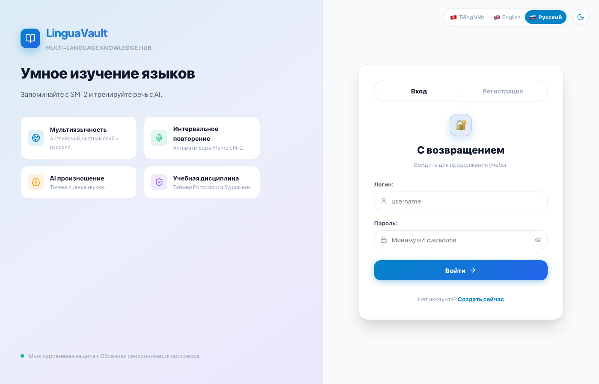

Содержание руководства
- 1. Как войти в приложение и выбрать русский язык
- 2. Главная страница — твой план на сегодня
- 3. Как учить и повторять слова по карточкам
- 4. Как замедлить или настроить скорость звука
- 5. Словарь — твоя личная копилка знаний
- 6. Умное чтение — чтение статей с переводом
- 7. Лаборатория речи — тренировка произношения
- 8. AI Истории — запоминание слов через сказки
- 9. Золотые правила для лёгкого обучения (10 мин в день)
1 Вход в приложение и русский язык
Когда ты открываешь приложение, перед тобой появится окно входа:

- Выбор языка: В правом верхнем углу нажми 🇷🇺 Русский. Все кнопки сразу переведутся на русский язык.
- Вход:
- Логин:
admin(или твой логин) - Пароль:
123456
- Логин:
- Нажми синюю кнопку «Войти».
💡 Совет: Нажми «Сохранить пароль» в браузере, чтобы в следующий раз заходить сразу в один клик!
2 Главная страница — твой план на день
После входа откроется главная панель с твоими успехами:

- 🔥 Серия дней (Streak): Показывает, сколько дней подряд ты занимаешься. Старайся заходить каждый день хотя бы на 5 минут, чтобы огонёк не угас!
- 📚 К повторению сегодня (Due): Количество карточек, готовых к повторению прямо сейчас.
- 🚀 Кнопка «Начать повторение»: Нажми на неё, чтобы сразу перейти к быстрой тренировке слов.
3 Как учить слова по карточкам
Приложение использует умный алгоритм памяти: простые слова появляются редко, а сложные — чаще, пока не запомнятся навсегда.

- Посмотри на слово на карточке и вспомни его значение про себя.
- Нажми «Показать ответ» — карточка перевернется с переводом и озвучкой.
- Честно нажми одну из 4 кнопок оценки:
🌟 Главное правило: Не бойся нажимать кнопку «Снова» — ошибки помогают мозгу выстроить самую надежную память!
4 Настройка скорости и акцента диктора
Если диктор говорит слишком быстро, речь можно замедлить до комфортного темпа:

- Внизу бокового меню нажми на значок 1x.
- Выбери кнопку 0.75x или передвинь ползунок (для начинающих идеальна скорость
0.8x). - Выбери акцент (🇺🇸 Американский или 🇬🇧 Британский).
- Нажми синюю круглую кнопку, чтобы сразу проверить звучание тестовой фразы!
5 Словарь (Vocab Vault) — копилка слов
В этом разделе хранятся все изученные слова:

- Поиск: Введи слово на русском или английском, чтобы найти его.
- Темы: Фильтруй слова по темам (Семья, Путешествия, Еда, Работа).
- Динамик 🔊: Нажимай на значок звука, чтобы слушать правильное произношение.
- Кнопка «+»: Нажми синюю кнопку, чтобы добавить новое интересное слово.
6 Умное чтение (Smart Reader)
Читай короткие интересные тексты с мгновенным переводом:

- Перевод по клику: Не знаешь слово? Просто нажми на него — сверху появится перевод!
- Слушание: Нажми на динамик рядом с любым предложением, чтобы диктор прочитал его вслух.
7 Лаборатория речи (Speaking Lab)
Тренируйся говорить красиво и уверенно:

- Подсказки 💡: Читай советы по произношению на русском языке — они подскажут, где сделать ударение и как поставить язык.
- Микрофон 🎙️: Нажми на микрофон, произнеси фразу вслух и нажми стоп — система оценит твой результат!
8 Запоминание через сказки и истории (AI Lab)
Искусственный интеллект помогает запомнить даже самые капризные слова:

- Нажми «Сгенерировать историю».
- ИИ придумает увлекательный рассказ, в который искусно вплетены слова, которые ты учишь.
- Историю можно прочитать и послушать в озвучке!
9 Три секрета лёгкого обучения
- 10 минут каждый день лучше, чем 2 часа раз в неделю: Память любит короткие ежедневные касания.
- Занимайся в удовольствие: Повтори 15 карточек утром за чаем или в дороге.
- Радуйся успехам: Смотри на растущую серию дней (Streak) и свой уровень опыта!